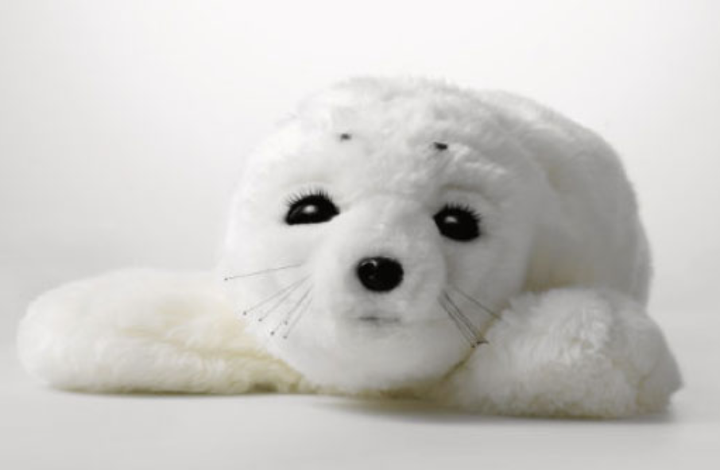

Dit onderwerp gaat vooral om kunstmatige intelligentie. Robots/gecreeerde wezens die kunnen doen en misschien zelfs denken zoals een mens of dier.
Deze opdracht gaat over het toepassen van een Homeostasis model op een apparaat. Een Homeostasis model geeft de behoeften en benodigheden van een systeem weer. Eigen acties en externe stimuli hebben dan ook invloed op de interne staat, deze bepaald het gedrag. Ik heb gekozen om deze toe te passen op een printer. Als eerste is er de vraag wat heeft een printer nodig. Zijn 'basis behoeften' zouden volgens mij dan stroom, inkt, papier en een opdracht zijn. Zonder stroom staat de printer uit en 'leeft' deze niet. Zonder inkt kan hij zijn functie van printen niet uitvoeren, hetzelfde geld voor papier. Vervolgens heeft de printer ook een opdracht nodig om uit te voeren anders wordt er niks geprint en heeft hij dus alsnog geen nut. Deze vier vormen de basisbehoeften voor de printer. Al twijfel ik wel of de 'opdracht geven' misschien als externe stimuli gezien moet worden. In principe komt dit natuurlijk van buiten de printer zelf vandaan en zorgt dit voor een verandering in staat van de printer. Je zou het bijna kunnen zien alsof de printer alleen nut heeft als er geprint moet worden, dit zou als 'blij' gezien kunnen worden. Een andere 'emotie' zou somber kunnen zijn aangezien de printer langzaam zijn basisbehoeften verliest. De inkt gaat langzaam op en zo ook het papier. Uitgehongerd zou je het bijna kunnen noemen. Hij vraagt zelfs om vervanging hiervan. Zodra de gebruiker dit doet kan hij weer goed aan het werkt en voelt hij zich weer blij.
 Paro de zeehond, een van de op dit moment bekendste Artificial Creatures, is op dit moment ook mijn favoriet. Paro is ontworpen door Takanori Shibata van het Intelligent System Research Institute. Klik hier om meer hierover te lezen. Paro is gemaakt voor dementerende mensen en om hier emoties bij op te roepen. Er zitten sensoren onder zijn vacht en hierdoor is hij in staat op op geluid, aanraking, beweging en licht te reageren. De sensoren zorgen ervoor dat het gedrag van Paro constant is afgestemd op de omgeving en de prikkels die gegeven worden. Het is dus eigenlijk een robot in een lief jasje, het knuffelgehalte is er namelijk zeker. Ik vind het wel een beetje apart dat ze voor een zeehond zijn gegaan, die keuze begrijp ik nog steeds niet helemaal. Wel vind ik het echt een heel tof project en een bijzondere manier om dementerende ouderen te helpen.
Ik vond Artificial Creatures een heel gaaf en interessant onderwerp. Sommige voorbeelden lagen voor de hand maar anderen, zoals de 'blokken' uit het hoorcollege totaal niet. Ik denk dat er in de toekomst echt heel veel oplossingen zullen komen voor problemen door het gebruik van Artificial Creatures. Zeker als ze het gedeelte emoties over kunnen brengen op deze wezens. Aan de andere kant vind ik dat juist ook een beetje eng klinken, alsof ze op een gegeven moment mensen zullen kunnen vervangen. Ik denk dat er binnen dit onderwerp ook een hoop ethische vraagstukken liggen. Ik denk dus zeker dat deze Creatures een hoop aan ons leven kunnen toevoegen maar dat er ook een grens moet worden gesteld.